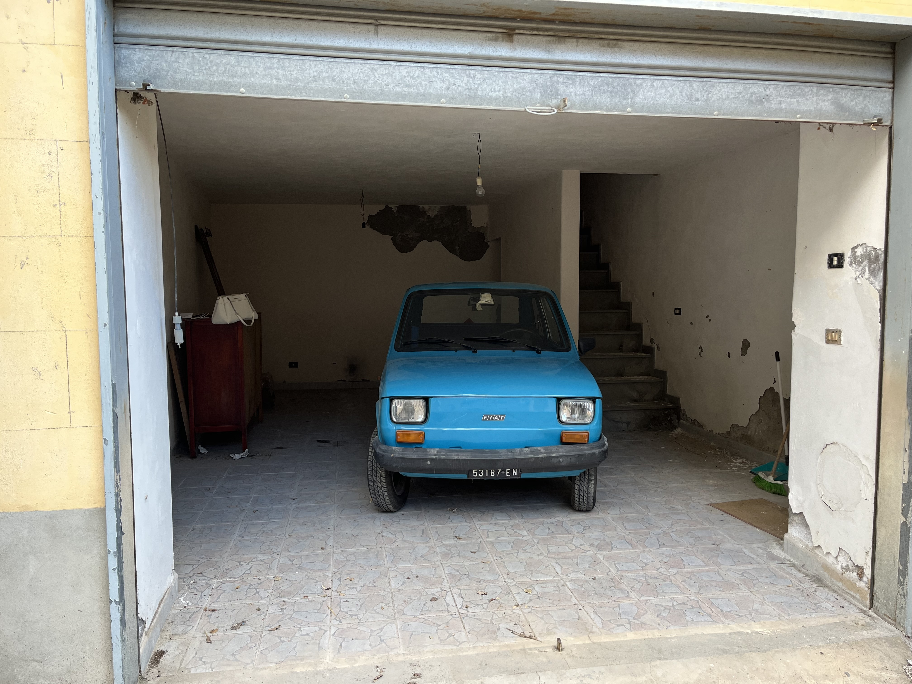
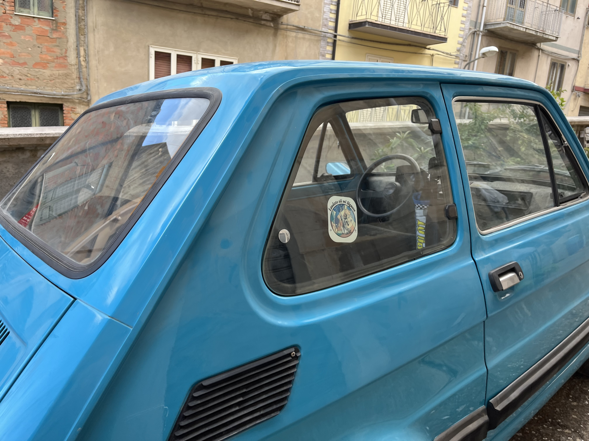
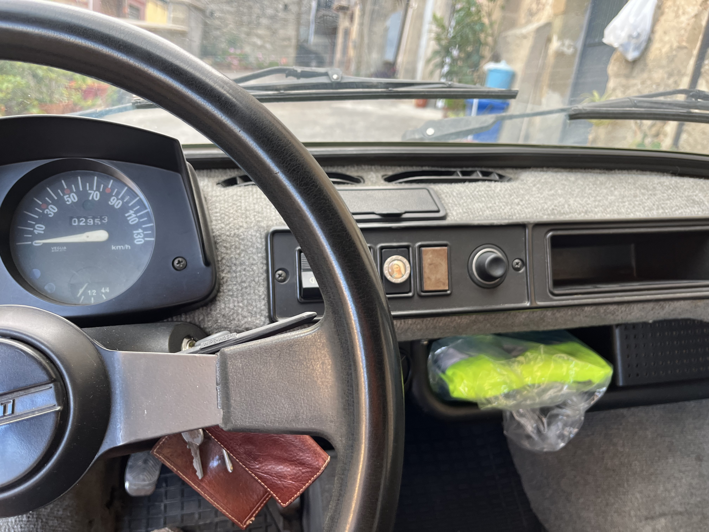
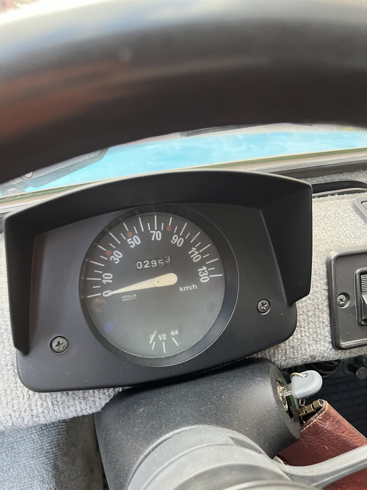
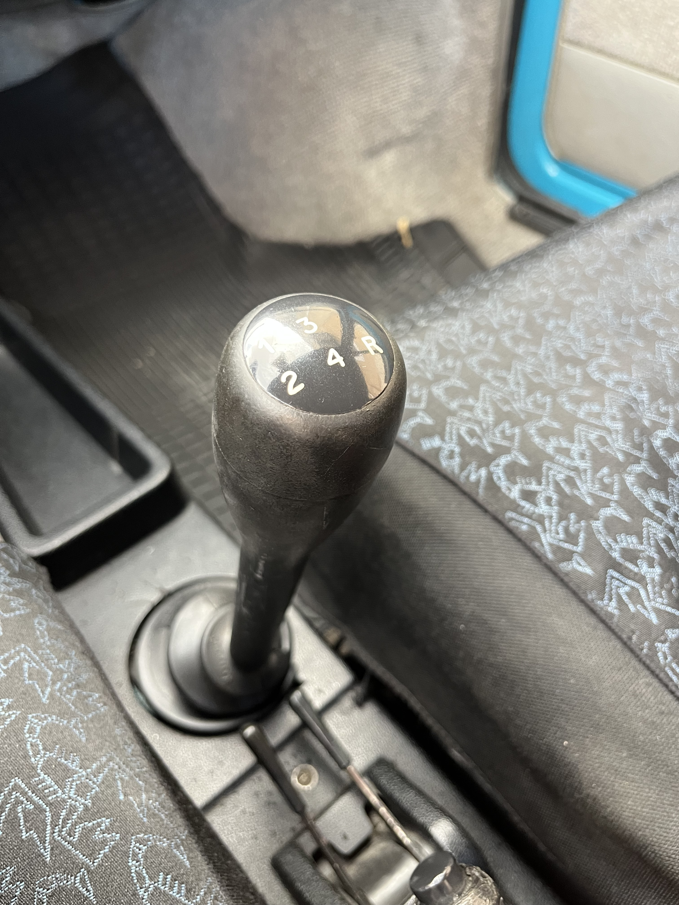
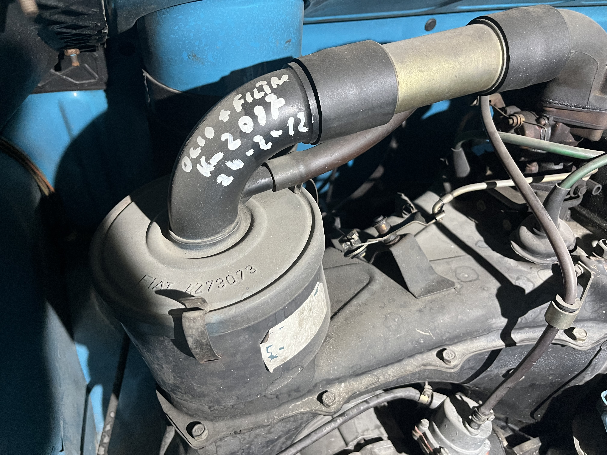
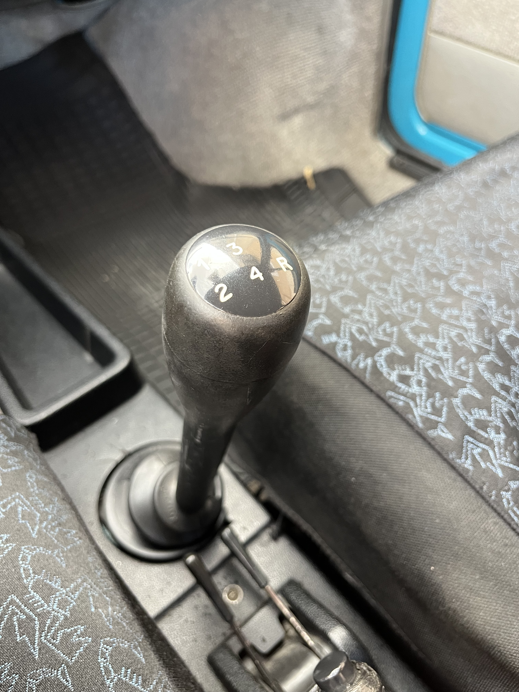
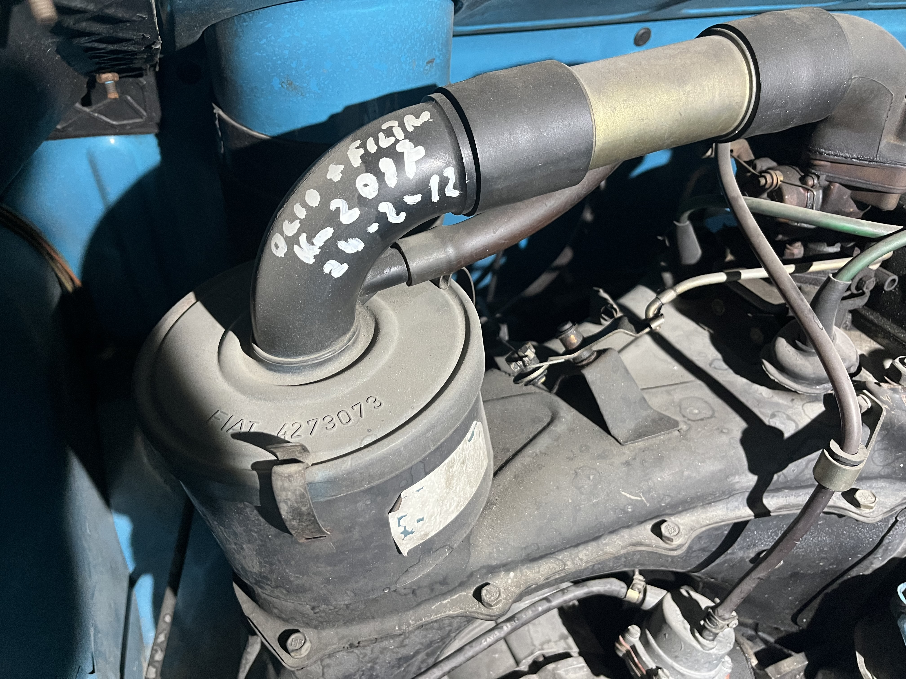
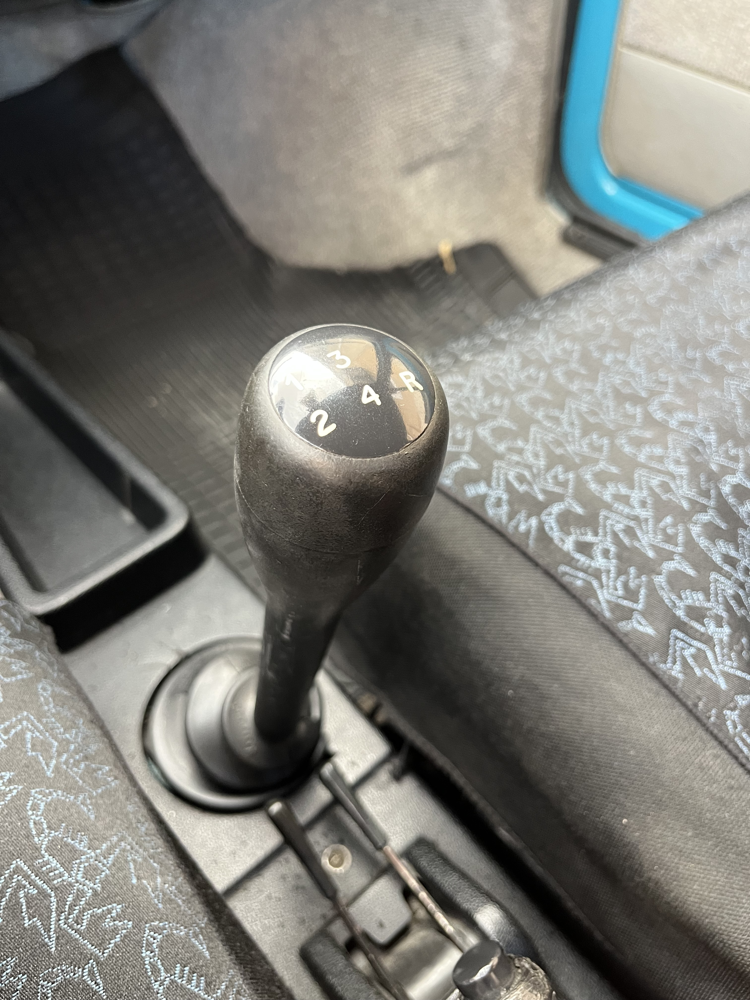
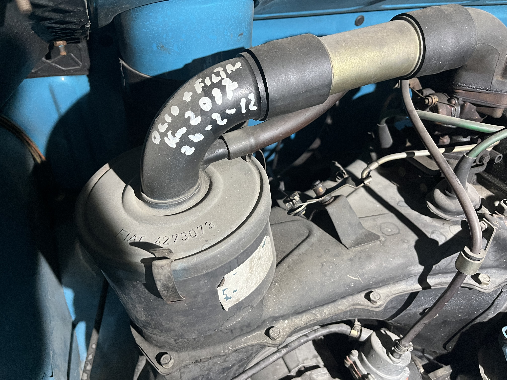

 





1 / 8
Sub-3k Km 1977 Fiat 127
This cute econobox was owned since new by a nun in Sicily and used only sparingly.
- Still wears its original paint, Blu Adriatico.
- Comes with all 8 pieces of original factory literature as well as original Fiat toolkit and jack.
- Was always garaged and was just mechanically refurbished, making it ready for the road.